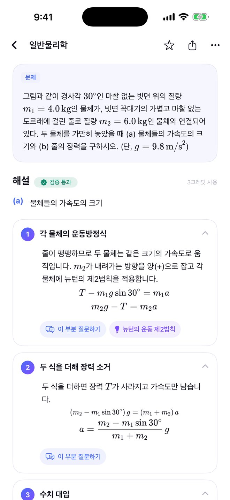
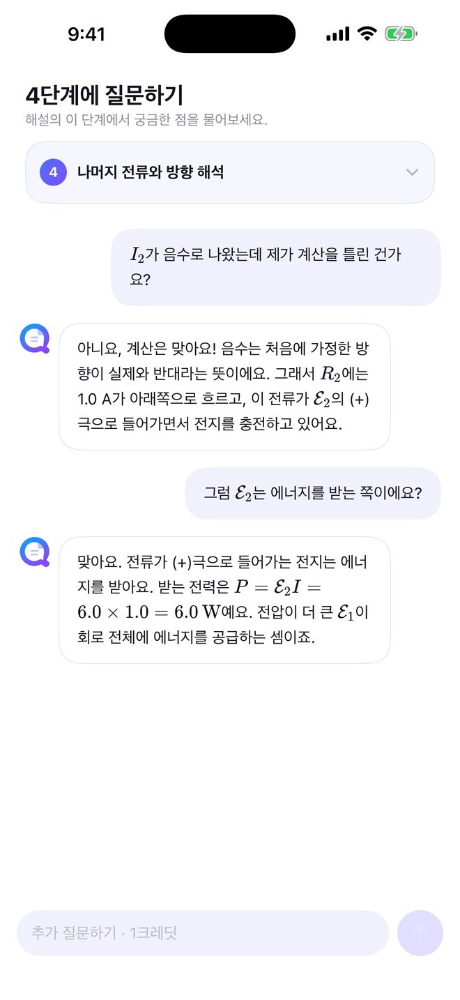
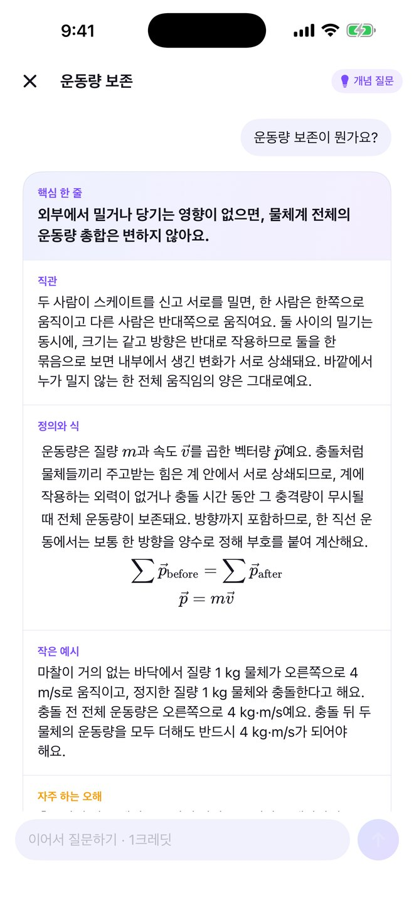
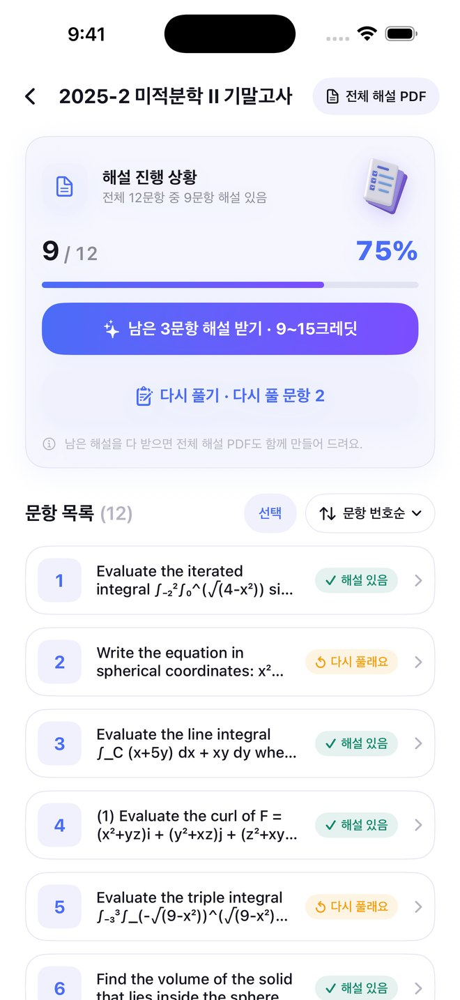
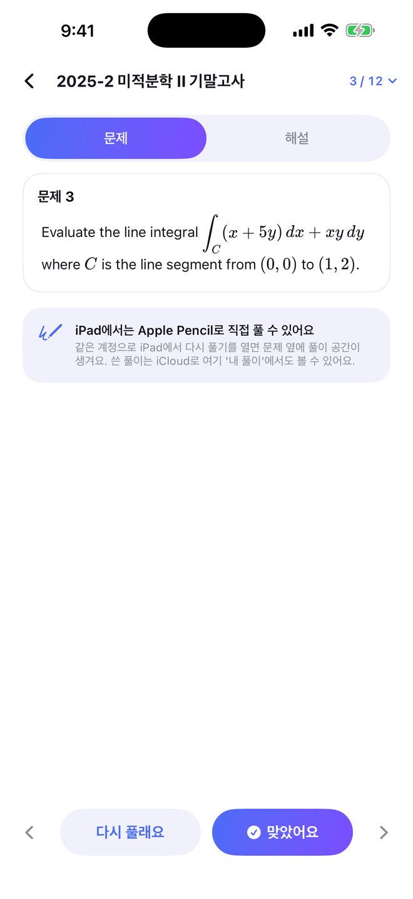

미적분학, 일반물리, 회로이론… 이공계 전공이면 뭐든 카메라로 찍기만 하면 Qlip이 단계별 해설을 만들어요. 막히는 단계는 짚어서 몇 번이고 물어보고, 문제 없이 개념만 물어볼 수도 있어요.

문제를 카메라로 찍거나 앨범에서 불러와요. 필요한 부분만 잘라 내고, 돌려서 바로 맞출 수 있어요.
Qlip이 문제를 읽고 개념과 수식을 담은 단계별 해설을 만들어요. 다른 AI가 한 번 더 검증해요.
막히는 단계를 짚어 바로 물어보세요. 문제 없이 개념만 따로 물어볼 수도 있어요.
해설을 가린 채 직접 다시 풀고 맞았어요·다시 풀래요로 표시하면, 틀린 문제가 복습에 모여요.
전체 문제를 다시 설명할 필요 없어요. 해설의 특정 단계를 선택하면, Qlip은 그 단계의 맥락을 그대로 기억한 채로 답해요.
선택한 단계의 수식과 개념을 기억한 채로 대화가 이어져요.
한 번의 질문으로 끝나지 않아요. 이해될 때까지 계속 물어볼 수 있어요.
기존 해설에서 오류가 발견되면 Qlip이 먼저 알려주고 다시 검증해요.
수식과 개념을 담은 해설을 단계마다 펼쳐 봐요. 검증을 통과하면 표시가 붙어요.
이해가 안 되는 단계를 짚어서 메신저처럼 바로 물어보세요.

문제가 없어도 괜찮아요. 핵심 한 줄, 직관, 정의와 식, 작은 예시, 자주 하는 오해까지 정리해 드려요.

족보 사진이나 PDF를 올리면 문항별로 나눠 문제집을 만들어요. 원하는 문항만 골라 해설을 받고, 해설지는 PDF로 받을 수 있어요. 같은 학교 자료는 바로 불러와요.

해설을 가리고 직접 다시 풀어 보세요. 맞았어요·다시 풀래요로 표시하며 문항을 넘겨요.

다시 풀 문제, 풀던 족보, 메모와 질문을 한곳에 모아 시험 전에 꺼내 봐요.
다른 도구들은 AI가 만든 답을 그대로 보여줘요. Qlip은 하나가 풀면 다른 시각에서 문제를 처음부터 다시 풀어 대조해요. 어긋나면 이슈를 반영해 한 번 더 고쳐 풀고, 그래도 확신이 서지 않으면 숨기지 않고 "완전히 확인하지 못했다"고 해설 위에 적어요 — 이 과정을 그대로 보여드릴게요.
사진에서 조건·단위·요구사항을 정확히 추출해요.
개념과 수식을 포함한 단계별 해설을 작성해요.
다른 시각에서 문제를 처음부터 다시 풀어 대조해요.
통과하면 "검증 통과"를, 확신이 없으면 그렇다고 적어서 보여드려요.
고등학교 문제집이 아니라 미적분학·선형대수·공업수학·일반물리·일반화학·회로이론·열역학 같은 대학 전공 문제에 맞춰져 있어요.
흐릿한 사진을 그대로 보여주지 않아요. 교과서처럼 깔끔하게 다시 조판해서 보여드려요 — 그림이 있는 문제만 원본을 그대로 유지해요.
기존 해설이 맞다고 무조건 우기지 않아요. 후속 질문 중 실제 오류가 발견되면 방어하지 않고 즉시 알려주고 다시 검증해요. 해설을 만들다 실패하면 그 크레딧은 돌려드려요.
내가 저장한 문제와 해설, 직접 쓴 풀이는 내 iCloud에 있어요. 다른 사람에게 다시 쓰이는 문제·해설에는 누가 올렸는지 남지 않아요. 계정에 남는 이용 기록도 길어야 90일이면 지워지고, 탈퇴하면 그 자리에서 사라져요. 광고에는 쓰지 않고요.
지금 App Store에서 받으실 수 있어요. iPhone과 iPad 모두 지원하고, 가입하면 매주 무료 크레딧이 들어와요.
App Store에서 받기 →문의: support@qlip.kr